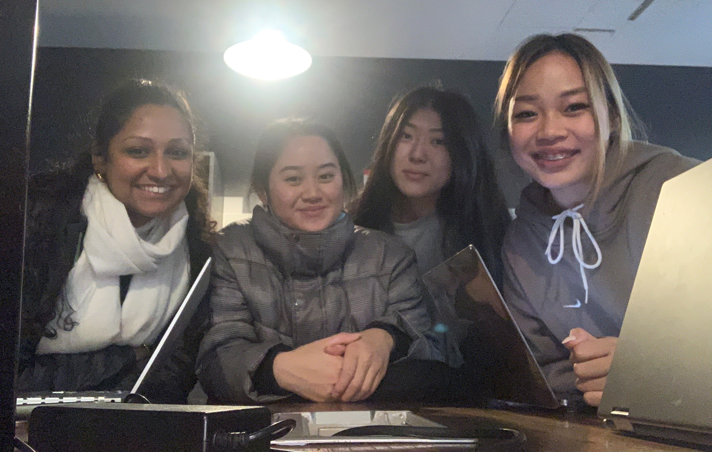
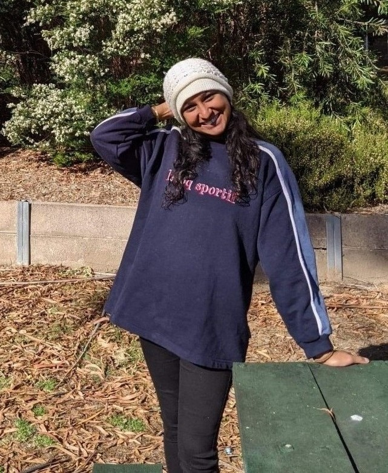

Welcome to our group website! Please select a section.

Team Profile
Team Members
There are four members in our team, "Powerpuff Girls" - Natanya (s3488872), Martina (s3908137), Wendy (s3898700) and Thao (s3901351).
Natanya

Hi, I’m Natanya and I’m from Melbourne - I was born in Sri Lanka and migrated to Australia when I was four. My passions are travel, fashion, photography, singing, design, and social psychology. I’m also passionate about the environment, international aid; and volunteering in these areas! I have travelled over the years to around 16 or so countries, in various capacities, learning the national languages where I could. After graduating high school in 2013, I went on to study a Bachelor of Fashion Design at RMIT for two years. Realising it wasn’t for me, and not what I wanted to do career-wise, I travelled and worked on and off, before considering enrolling in an IT degree. My pursuits in various areas over the years led me to realise I enjoyed things of a practical and logical nature, and my affinity for tech also made it easier to decide on this. Being a growing field, I found IT an ideal sector to enter, and already had some knowledge of the field through my brother (an IT consultant), and my own exploration and life experiences. Currently, I’d like to explore the areas of cloud-computing and cybersecurity, but am aware this might change. I’m a member of the team: Powerpuff Girls. You can read more about me here.
Martina
 Hi I’m Martina and I am Australian Vietnamese. I like to play the keyboard, guitar and ukulele, and my go-to songs to play are either recent pop songs or ballads that I learn off of Youtube. One other thing is that I never fail to sing or hum a tune at least once a day. I started in the field of commerce fresh after high school, but I always had a small interest in the field of information technology, so I actually switched midway through my previous degree to pursue IT at RMIT. My understanding in IT is basic even though I grew up with technology all around me. The closest IT experience I have is in my everyday consumption of all the different technologies surrounding me, but I am keen to learn more about information technology in this Bachelor’s at RMIT. You can read more about me here.
Hi I’m Martina and I am Australian Vietnamese. I like to play the keyboard, guitar and ukulele, and my go-to songs to play are either recent pop songs or ballads that I learn off of Youtube. One other thing is that I never fail to sing or hum a tune at least once a day. I started in the field of commerce fresh after high school, but I always had a small interest in the field of information technology, so I actually switched midway through my previous degree to pursue IT at RMIT. My understanding in IT is basic even though I grew up with technology all around me. The closest IT experience I have is in my everyday consumption of all the different technologies surrounding me, but I am keen to learn more about information technology in this Bachelor’s at RMIT. You can read more about me here.
Wendy
 Hello, My name is Wendy Si and my student number is s3898700. I am from Shanghai, but was born and raised in Melbourne. My date of birth is the 8th of February 2003 and my background is Chinese. I graduated from Nossal High School in 2020 and am now a first year Bachelor of Information Technology at RMIT. I can speak English and Mandarin Chinese, and can understand Shanghainese. A fun fact about me is that I used to be a state level swimmer when I was around 10 years old. My hobbies are playing video games, reading manga, watching anime, going clubbing and going out with friends. My interest in Information Technology is mainly centred around the coding aspect, I am interested in creating programs and learning the languages. I like how Information Technology is very practical as well, with getting the opportunity to make things. This allows me to implement what I’ve learnt and be able to create projects and sharpen my skills. My experience in Information Technology is very minimal. I learnt enough HTML to build a website back in 2017 and completed an online course in Python 2 in 2018, however those skills are long forgotten as I haven’t retained my knowledge from that time. Our team's chosen name is the Powerpuff Girls.
Hello, My name is Wendy Si and my student number is s3898700. I am from Shanghai, but was born and raised in Melbourne. My date of birth is the 8th of February 2003 and my background is Chinese. I graduated from Nossal High School in 2020 and am now a first year Bachelor of Information Technology at RMIT. I can speak English and Mandarin Chinese, and can understand Shanghainese. A fun fact about me is that I used to be a state level swimmer when I was around 10 years old. My hobbies are playing video games, reading manga, watching anime, going clubbing and going out with friends. My interest in Information Technology is mainly centred around the coding aspect, I am interested in creating programs and learning the languages. I like how Information Technology is very practical as well, with getting the opportunity to make things. This allows me to implement what I’ve learnt and be able to create projects and sharpen my skills. My experience in Information Technology is very minimal. I learnt enough HTML to build a website back in 2017 and completed an online course in Python 2 in 2018, however those skills are long forgotten as I haven’t retained my knowledge from that time. Our team's chosen name is the Powerpuff Girls.
Thao
 FILL. You can read more about me here.
FILL. You can read more about me here.
Team Profile - Personalities and Dynamics
FILL
IT Technologies
Autonomous Vehicles:
Autonomous vehicles (AVs) are self-driving cars which means it is driverless, fully reliant on the computer systems, and passengers can focus on completely different tasks to driving. There are five levels with autonomous vehicles, ranging from level 1, to level 5 which is what a driverless AV is. At present, only some companies have at most reached level 3, conditional automation, where the driver can rely on the vehicle to take control in traffic that is moving the same way, such as on highways, but must still be attentive and ready to take over. At level 1 and 2, we have Advanced driver-assistance systems (ADAS), as mentioned by (Infrastructure partnerships Australia, 2017) and (Wevolver, 2020), which include some features such as keeping cars in their lane, driving on cruise control on highways, self-parking cars and automatic brakes in accident prone situations. Full automation is still in progress due to the limitations of machine learning and insufficient data collection. As driving is a task that requires fast and accurate responses to a car’s surroundings, and is a difficult task even for humans to carry out, it has proven to be much more complicated to creators which is why the timeline for AVs to become a reality is still unknown (Piper, 2020).

Figure 1: Levels of driving automation summary (Wevolver 2020)
Autonomous vehicles contain many components for it to be driverless and moving safely and accurately on public roads. Some of the essential equipment include cameras, sensors, computer systems, but also electronic access to the brakes, steering wheel, and pedals. The computer systems in AVs collect copious amounts of data in real time and this learning continuously occurs overtime. This process is referred to as machine learning which is aided by artificial intelligence tools. Machine learning can be parallel to a human creating infinite connections from information given to them, to then being able to make predictions on their own (Dia 2021). So similarly, machine learning in AVs improves and deepens over time as it constantly learns and builds on its ability to predict solutions to all types of interactions while it drives (Cohen 2018, 2018).

Figure 2: Multiple examples of perception in self-driving cars (Massey 2017)
Perception in robots and machines, requires a combination of tools. AVs use cameras and multiple types of sensors to be able to ‘see’ while it drives. Not only does an AV need sight, but it also needs to be able to detect objects near, and far accurately. For example, a driving car would need to be able to tell the difference between a human on a mobility scooter, compared to a supermarket trolley. This is done through the combination of using ‘object classification (knowing what the object actually is),’ and ‘object localisation (which is essentially know where each object is situated),’ which is then executed with multiple algorithms to achieve accurate object detection in AVs (Lai 2018). Localisation is essential for vehicles which is achieved with both highly detailed maps and sensor fusion. Cameras on their own, have weaknesses in practise such as sun glare and bad weather conditions. Some AVs also use radar sensors, LIDAR or even ultrasound sensors. LIDAR uses light waves to be able to localise a vehicle, but rain and bad weather render it useless. It is also extremely dear equipment which further hinders many companies from being able to resource it for their AVs. Radar uses radio waves to help machines see but provides poor vision in comparison to LIDAR. On the other hand, ultrasonic sensors are also evident in some companies work with AVs, but its’ limitation is that it does not have a large range of distance that it can perceive. As seen, all sensors have their limitations but in combination with one or the other, using sensor fusion (Burke, 2019), and a very popular technique called SLAM (Simultaneous Localisation and Mapping) which positions the car and the position of crucial landmarks (Cohen 2018, 2018), an AV can see and start to understand the world around it using machine learning and artificial intelligence.
AVs are thought to create a more efficient and safer world. For the most part, this thought can be argued as being true, but applicable in the scenario of AVs being well established in the world. The elderly and disabled population will not need to be reliant on carers for transport and will have their own modes of transport with AVs. The cost of commercial transport would become extremely cheap and accessible to all classes of society. It would on one hand, remove the need of taxi drivers and ride share drivers, but would create an endless stream of jobs to maintain, update and improve the systems of AVs. Our world will change dramatically where travel by AVs will become a norm. Everything from our public transport to personal cars, to trucks and more… that keep the population moving would potentially become driverless in the future. It is expected that eventually AVs will become fully electric as well, and thus cost of transport should be cut dramatically and the stress on carbon emissions from transportation should reduce (Marshall 2020).
The general population will experience fewer road deaths due to human error and living standards would be higher overall due to the removal of stress from driving. ‘The health implications of commuting are significant,’ says Dr. Nuttman from Deakin University’s Faculty of Health. ‘Regularly battling peak hour traffic and travelling long distances to work leads to poorer mental health, stress and an increase in road rage incidents.’ AVs will remove the need for drivers to drive, thus fostering an environment where calmness and relief replaces what would be anxiety and stress behind the wheel.
In my daily life, an AV will tremendously improve my mental wellbeing. I would have more time to sleep, as the car would allow me to rest while it drives me to destinations in the future, especially to work. This will allow me to be well rested, calmer, and less anxious when I would have to go about my life. It would reduce my exposure to stress during peak hour traffic, as opposed to nowadays since I must put all my focus on driving. I would be able to travel a lot more without the hassle of having to drive, and enjoy more of my leisure time exploring new places around home. My consciences would also hold less guilt as the world would be travelling on mostly electricity in the future, which places less strain on the climate compared to amount of carbon emissions that transport contributes nowadays.
For my family, AVs will allow us to have less conflict in deciding who must go on errands with our parents. It will mean my parents will merely need to be passengers in the AV without any of my siblings or myself. We would not need to worry in the future about our parents’ mode of transport as AVs would be trustworthy in taking my parents from place to place. Cars would be used more if it were made available as an AV, as it would be easy to use and allow privacy unlike public transport, but of course at the possible expense of the environment. Overall, it would increase the living standards of our world as less time will be spent on commutes for every day drivers, and there would be less accidents on the roads due to human error.